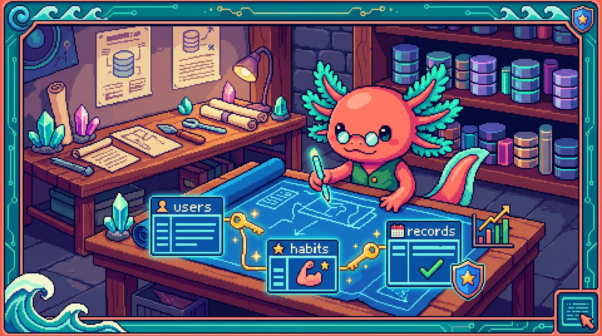

Capitulo 14 — Mini-proyecto: diseña la base de datos de una app

¡Llegaste al gran momento! Hasta aquí aprendiste tablas, tipos, claves y consultas por separado. Hoy juntamos todo y diseñamos, desde cero, la base de datos completa de una mini app de hábitos al estilo de RachaSimple. Vamos a crear las tablas de usuarios, hábitos y registros, las conectaremos con claves, escribiremos una consulta de estadísticas con
JOINyGROUP BY, y al final protegeremos los datos con RLS. Todo se puede pegar y ejecutar en el editor SQL de Supabase 💻. Bit, nuestro ajolote, viene con casco de obrero: hoy construimos. 🚧
1. ¿Qué vamos a construir?
Imagina una app sencilla: el usuario crea hábitos (por ejemplo, "Beber agua" o "Leer 10 minutos") y cada día marca si los cumplió. La app le muestra su racha: cuántos días seguidos lo ha logrado. Esa es exactamente la idea de RachaSimple.
Para que eso funcione necesitamos guardar tres cosas:
- Quién es cada persona (usuarios / perfiles).
- Qué hábitos tiene cada persona.
- Qué días marcó cada hábito (los registros).
Antes de tocar SQL, comparemos dos formas de guardar esto, porque elegir bien es la mitad del diseño.
🟦 ¿Que significa? — Base de datos relacional
Es una forma de guardar información en tablas (como hojas de cálculo) que se relacionan entre sí mediante claves. "Relacional" porque una fila de una tabla puede apuntar a una fila de otra. Sirve para tener datos ordenados, sin repetir y fáciles de consultar. En RachaSimple y en Faro los datos viven en una base de datos relacional Postgres dentro de Supabase.
🟦 ¿Que significa? — Postgres
Es el motor de base de datos (el programa que guarda y consulta los datos) que usa Supabase por debajo. Es gratuito, muy robusto y entiende SQL. Sirve para almacenar tus tablas y ejecutar tus consultas. Tanto RachaSimple como Faro/Organizer corren sobre Postgres gestionado por Supabase.
🟦 ¿Que significa? — Supabase
Es una plataforma que te da una base de datos Postgres lista para usar, más login de usuarios, API automática y un editor SQL en el navegador. Sirve para no montar un servidor a mano. RachaSimple y Faro la usan para guardar datos y autenticar personas.
El contraste: PolyPaw no usa base de datos relacional
No toda app necesita Postgres. PolyPaw (la app educativa en Python/Flet) guarda sus datos en archivos JSON sueltos, no en tablas relacionadas.
🟦 ¿Que significa? — JSON
Es un formato de texto para guardar datos como listas y pares "clave: valor", por ejemplo
{"nombre": "Bit", "edad": 3}. Sirve para datos sencillos y portables. PolyPaw guarda sus misiones y progreso en archivos.json, sin un motor de base de datos detrás.
Eso funciona para PolyPaw porque sus datos son pocos y casi no cambian a la vez. Pero para una app de hábitos con muchos usuarios marcando registros al mismo tiempo, los archivos JSON se quedan cortos: no sabes buscar rápido "todos los registros de María en mayo" ni evitar que dos personas se pisen. Ahí brilla lo relacional.
💡 Tip
Regla de bolsillo: si tus datos son pocos, locales y de un solo usuario, un JSON basta (como PolyPaw). Si son muchos, compartidos o necesitas buscar y cruzar, usa una base de datos relacional (como RachaSimple y Faro).
2. Diseñar en papel antes de escribir SQL
Bit insiste: piensa primero, teclea después. Vamos a dibujar las tres tablas y sus columnas. Cada tabla guarda un tipo de cosa, y cada columna guarda un dato de esa cosa.
🟦 ¿Que significa? — Tabla
Es una colección de datos del mismo tipo, organizada en filas y columnas, como una hoja de cálculo. Cada fila es un elemento (un usuario, un hábito) y cada columna un atributo. Sirve para agrupar información parecida. En Faro existe la tabla
projects(un proyecto por fila) y en RachaSimple la tabla de hábitos (un hábito por fila).🟦 ¿Que significa? — Columna
Es cada "campo" de una tabla: nombre, fecha, etc. Define qué dato se guarda y de qué tipo. Sirve para que cada pieza de información tenga su lugar. La tabla de hábitos de RachaSimple tiene columnas como
nombreycreated_at.🟦 ¿Que significa? — Fila (registro)
Es una entrada concreta dentro de una tabla: un usuario específico, un hábito específico. También se le llama "registro". Sirve para representar un elemento real. En Faro, cada fila de
projectses un proyecto que el usuario conectó.
Nuestro diseño en palabras:
- profiles (perfiles): una fila por persona. Guarda su id y su nombre visible.
- habits (hábitos): una fila por hábito. Sabe a qué persona pertenece.
- habit_logs (registros): una fila por día marcado. Sabe a qué hábito pertenece y en qué fecha.
🔎 En tu codigo
En RachaSimple el patrón real es justo este: tablas de perfiles, de hábitos y de registros de racha, todas en Supabase. En Faro/Organizer verás el mismo molde con otros nombres:
projects(proyectos),phases(fases) yuser_connections(conexiones del usuario).
3. Las claves: cómo se identifican y se conectan las filas
Para que las tablas "se hablen" necesitamos dos tipos de claves.
🟦 ¿Que significa? — Clave primaria (primary key)
Es la columna que identifica de forma única a cada fila, como un número de cédula. No se repite ni queda vacía. Sirve para señalar sin confusión "esta fila y no otra". En Faro, cada tabla tiene una columna
idque es su clave primaria.🟦 ¿Que significa? — Clave foránea (foreign key)
Es una columna que apunta a la clave primaria de otra tabla, creando la relación. Sirve para conectar datos: "este hábito pertenece a este usuario". En RachaSimple, los registros apuntan al hábito al que pertenecen mediante una clave foránea.
🟦 ¿Que significa? — UUID
Es un identificador larguísimo y único, como
a1b2c3d4-..., prácticamente imposible de repetir. Sirve como clave primaria difícil de adivinar (mejor que un simple 1, 2, 3 para apps con login). Supabase usa UUID para los ids de usuario en su sistema de autenticación, y Faro los usa en sus tablas.🟦 ¿Que significa? — auth.users
Es una tabla especial que Supabase crea sola para guardar las cuentas (correo, contraseña, etc.) cuando alguien se registra. No la creas tú. Sirve como fuente oficial de "quién está logueado". En RachaSimple y Faro, los perfiles se enlazan a
auth.userspor el id del usuario.
La idea de conexión es esta cadena:
auth.users → profiles → habits → habit_logs
(Supabase) (tu perfil) (tus hábitos) (tus días marcados)
Cada flecha es una clave foránea. Así, desde un registro puedes "subir" hasta saber de qué hábito es y de qué usuario.
4. Tipos de datos: decirle a cada columna qué guarda
Antes de escribir las tablas, elegimos el tipo de cada columna.
🟦 ¿Que significa? — Tipo de dato
Es la categoría de información que una columna acepta: texto, número, fecha, verdadero/falso... Sirve para que la base de datos valide y guarde correctamente (no dejará meter texto donde va una fecha). En Faro, la columna
progresses numérica ydescriptiones de texto.
Los tipos que usaremos hoy:
🟦 ¿Que significa? — text
Tipo para cadenas de texto de cualquier largo: nombres, descripciones. Sirve para guardar palabras y frases. El
nombrede un hábito en RachaSimple estext.🟦 ¿Que significa? — date
Tipo para fechas sin hora, como
2026-06-26. Sirve para guardar el día de algo. En nuestra app, la columna que dice "qué día marcaste el hábito" serádate.🟦 ¿Que significa? — boolean
Tipo que solo guarda
true(verdadero) ofalse(falso). Sirve para preguntas de sí/no, como "¿completado?". Lo usaremos para marcar si el hábito se cumplió ese día.🟦 ¿Que significa? — timestamptz
Tipo para fecha y hora con zona horaria, como "2026-06-26 14:30 GMT-5". Sirve para registrar el momento exacto en que algo ocurrió. Faro y RachaSimple usan
timestamptzen su columnacreated_at("creado el...").💡 Tip
Diferencia clave: usa
datecuando solo importa el día (ej. "marqué el hábito el 26"). Usatimestamptzcuando importa el instante exacto (ej. "esta fila se creó a tal hora"). Mezclarlos confunde tus consultas más tarde.
5. Creando la tabla de perfiles 💻
¡A teclear! Abre tu proyecto en Supabase, ve a SQL Editor y pega esto.
🟦 ¿Que significa? — Editor SQL de Supabase
Es una pantalla dentro de Supabase donde escribes consultas SQL y las ejecutas con un botón. Sirve para crear tablas, insertar datos o probar consultas sin programar nada más. Es donde ejecutarás todo este capítulo.
🟦 ¿Que significa? — CREATE TABLE
Es la instrucción SQL que crea una tabla nueva con sus columnas y tipos. Sirve para definir dónde se guardarán los datos. Cada tabla de Faro nació de un
CREATE TABLE.
create table profiles (
id uuid primary key references auth.users (id) on delete cascade,
nombre text,
created_at timestamptz default now()
);
Desmenucemos línea por línea:
id uuid primary key: la clave primaria del perfil es un UUID.references auth.users (id): ese id es el id del usuario en Supabase. Aquí nace la clave foránea haciaauth.users.on delete cascade: si se borra la cuenta, su perfil se borra solito (no queda basura).nombre text: el nombre visible, texto libre.created_at timestamptz default now(): la fecha-hora de creación, que se rellena sola.
🟦 ¿Que significa? — references
Es la palabra SQL que declara una clave foránea: dice "esta columna apunta a la clave primaria de tal tabla". Sirve para enlazar tablas. En RachaSimple, la tabla de registros usa
referencespara apuntar a la tabla de hábitos.🟦 ¿Que significa? — on delete cascade
Es una regla que dice "si borras la fila padre, borra también las filas hijas que dependen de ella". Sirve para no dejar datos huérfanos. Si en Faro borras un proyecto, sus fases se van con él gracias a
on delete cascade.🟦 ¿Que significa? — default now()
defaultda un valor automático cuando no escribes ninguno;now()devuelve la fecha-hora actual. Juntos rellenan solos el "creado el...". Las columnascreated_atde Faro usan exactamente este truco.⚠️ Cuidado
El orden importa. No puedes crear
habitsantes queprofilessihabitsapunta aprofiles: la tabla a la que apuntas debe existir primero. Ejecuta losCREATE TABLEen orden: perfiles, luego hábitos, luego registros.
6. Creando la tabla de hábitos 💻
Cada hábito pertenece a un usuario. Por eso lleva una clave foránea a auth.users.
create table habits (
id uuid primary key default gen_random_uuid(),
user_id uuid not null references auth.users (id) on delete cascade,
nombre text not null,
created_at timestamptz default now()
);
Novedades respecto a la tabla anterior:
default gen_random_uuid(): como aquí el id no viene deauth.users, le pedimos a Postgres que genere un UUID nuevo automáticamente.user_id ... not null: el dueño del hábito.not nullobliga a que siempre haya dueño.nombre text not null: el hábito siempre debe tener nombre.
🟦 ¿Que significa? — gen_random_uuid()
Es una función de Postgres que inventa un UUID nuevo y único cada vez. Sirve para generar claves primarias sin pensarlas tú. Las tablas de Faro que no heredan el id de un usuario usan esta función como
default.🟦 ¿Que significa? — not null
Es una regla que prohíbe dejar una columna vacía. Sirve para garantizar datos obligatorios (un hábito sin nombre no tiene sentido). En Faro, columnas como el nombre del proyecto son
not null.🔎 En tu codigo
En RachaSimple, la tabla de hábitos real sigue este mismo esqueleto: un
idpropio, unuser_idque enlaza con el dueño y unnombre. Es el corazón de la app.
7. Creando la tabla de registros 💻
Aquí guardamos cada día marcado. Un registro pertenece a un hábito (y, a través de él, a un usuario).
create table habit_logs (
id uuid primary key default gen_random_uuid(),
habit_id uuid not null references habits (id) on delete cascade,
user_id uuid not null references auth.users (id) on delete cascade,
fecha date not null,
completado boolean not null default true,
created_at timestamptz default now()
);
Lo nuevo:
habit_id ... references habits (id): la clave foránea al hábito. Esta es la conexión central de la app.- Repetimos
user_idpor comodidad: así una consulta sabe de quién es el registro sin tener que pasar por la tabla de hábitos. (Es una decisión de diseño habitual.) fecha date: el día marcado.completado boolean default true: por defecto, si hay registro, asumimos que sí se cumplió.
💡 Tip
Guardar
user_idtambién enhabit_logs(aunque ya esté enhabits) se llama "desnormalizar un poquito". Lo hacemos para que las políticas de seguridad y las consultas sean más simples y rápidas. Es un truco común en apps Supabase como RachaSimple.⚠️ Cuidado
Sin una restricción extra, nada impide marcar dos veces el mismo hábito el mismo día. Si quieres evitarlo, puedes añadir una clave única sobre
(habit_id, fecha). Lo dejamos como ejercicio para que no te abrumes hoy.
Con estas tres tablas, ¡tu base de datos ya existe! Bit hace una voltereta.
8. Metiendo datos de prueba 💻
Una base vacía no se puede consultar. Insertemos algo.
🟦 ¿Que significa? — INSERT
Es la instrucción SQL que agrega filas nuevas a una tabla. Sirve para meter datos. Cada vez que en RachaSimple marcas un hábito, por debajo corre un
INSERTen la tabla de registros.
Primero un par de hábitos (reemplaza el UUID por el de tu usuario, que ves en la sección Authentication de Supabase):
insert into habits (user_id, nombre) values
('TU-UUID-AQUI', 'Beber agua'),
('TU-UUID-AQUI', 'Leer 10 minutos');
Luego unos registros de ejemplo. Aquí usamos una subconsulta para no copiar a mano el id del hábito:
insert into habit_logs (habit_id, user_id, fecha)
select id, user_id, '2026-06-24'
from habits
where nombre = 'Beber agua';
insert into habit_logs (habit_id, user_id, fecha)
select id, user_id, '2026-06-25'
from habits
where nombre = 'Beber agua';
🟦 ¿Que significa? — Subconsulta
Es una consulta metida dentro de otra; el resultado de la interna alimenta a la externa. Sirve para buscar un valor "al vuelo" (aquí, el id del hábito "Beber agua"). Evita tener que copiar ids a mano.
9. La consulta estrella: estadísticas con JOIN y GROUP BY 💻
Llegó lo bonito. Queremos una tabla que diga, por cada hábito, cuántos días se ha cumplido. Para eso necesitamos juntar la tabla de hábitos con la de registros.
🟦 ¿Que significa? — SELECT
Es la instrucción SQL que lee datos: elige qué columnas y filas quieres ver. Sirve para consultar sin modificar nada. En Faro, mostrar la lista de proyectos del usuario es un
SELECT.🟦 ¿Que significa? — JOIN
Es la operación que combina filas de dos tablas según una condición (normalmente una clave foránea coincidiendo con una primaria). Sirve para ver datos relacionados juntos, como el nombre del hábito al lado de sus registros. Faro usa
JOINpara mostrar un proyecto junto con sus fases.🟦 ¿Que significa? — GROUP BY
Es la cláusula que agrupa filas que comparten un valor para resumirlas (contar, sumar, promediar). Sirve para sacar estadísticas: "cuántos registros por hábito". Sin él no podrías hacer totales por grupo.
🟦 ¿Que significa? — COUNT
Es una función que cuenta filas. Junto a
GROUP BYcuenta cuántas hay en cada grupo. Sirve para preguntas tipo "¿cuántos días marqué este hábito?".
La consulta completa:
select
h.nombre,
count(l.id) as dias_cumplidos
from habits h
join habit_logs l on l.habit_id = h.id
where l.completado = true
group by h.nombre
order by dias_cumplidos desc;
Léela como una frase: "Por cada nombre de hábito (group by h.nombre), cuenta sus registros completados (count), combinando hábitos con sus registros (join), y ordénalos de más a menos". El resultado sería algo así:
nombre | dias_cumplidos
----------------+----------------
Beber agua | 2
Leer 10 minutos | 0
🟦 ¿Que significa? — Alias (AS)
Es un apodo temporal para una tabla o columna.
habits hllamaha la tabla;count(...) as dias_cumplidosnombra la columna del resultado. Sirve para escribir consultas cortas y legibles. Es práctica común en las consultas de Faro.🟦 ¿Que significa? — ORDER BY
Es la cláusula que ordena el resultado por una columna, ascendente o descendente (
desc). Sirve para mostrar primero lo más relevante. Aquí pone arriba el hábito con más días cumplidos.💡 Tip
Si un hábito tiene cero registros y aún así quieres verlo en la lista (como "Leer 10 minutos" arriba), cambia
joinporleft join. Elleft joinconserva todas las filas de la tabla izquierda aunque no tengan pareja a la derecha.
10. Seguridad: políticas RLS básicas 💻
Tu base ya funciona... pero hay un problema enorme: cualquiera podría leer los hábitos de cualquiera. Necesitamos que cada quien vea solo lo suyo. Eso es RLS.
🟦 ¿Que significa? — RLS (Row Level Security)
"Seguridad a nivel de fila": reglas que deciden qué filas puede ver o tocar cada usuario, no la tabla entera. Sirve para que María solo acceda a los datos de María. Tanto RachaSimple como Faro/Organizer protegen TODAS sus tablas con RLS; es una regla de seguridad del proyecto.
🟦 ¿Que significa? — Política (policy)
Es una regla RLS concreta que dice, para una acción (leer, insertar...), qué filas se permiten. Sirve para expresar "solo puedes ver tus propias filas". Las tablas de Faro tienen políticas que comparan el dueño de la fila con el usuario logueado.
🟦 ¿Que significa? — auth.uid()
Es una función de Supabase que devuelve el id del usuario que está logueado en este momento. Sirve para comparar "¿esta fila es tuya?". Es la pieza central de casi toda política RLS en RachaSimple y Faro.
Primero activamos RLS en cada tabla (mientras no la actives, las políticas no se aplican):
alter table profiles enable row level security;
alter table habits enable row level security;
alter table habit_logs enable row level security;
⚠️ Cuidado
Activar RLS sin crear políticas bloquea todo: nadie verá nada (ni siquiera tú desde la app). Es seguro, pero inútil. Siempre crea políticas después de activar RLS.
Ahora las políticas. Cada usuario solo gestiona sus hábitos:
create policy "Ver mis habitos"
on habits for select
using (auth.uid() = user_id);
create policy "Crear mis habitos"
on habits for insert
with check (auth.uid() = user_id);
Y lo mismo para los registros:
create policy "Ver mis registros"
on habit_logs for select
using (auth.uid() = user_id);
create policy "Crear mis registros"
on habit_logs for insert
with check (auth.uid() = user_id);
🟦 ¿Que significa? — using vs with check
En una política,
usingfiltra qué filas existentes puedes leer o modificar;with checkvalida qué filas nuevas puedes crear. Sirven para controlar lectura y escritura por separado. Ambas comparanauth.uid()con el dueño de la fila.
Lee la política en voz alta: "permite el select en habits usando la condición de que el id del usuario logueado sea igual al dueño de la fila". Magia: la misma consulta del paso 9 ahora devuelve solo TUS hábitos, sin que cambies una sola línea de la consulta.
🔎 En tu codigo
En Faro/Organizer, la tabla
user_connections(que guarda los tokens de GitHub y Google Drive) vive protegida por RLS con este mismo patrónauth.uid() = user_id. Por eso los secretos de un usuario jamás se filtran a otro. Es parte de la regla de seguridad del proyecto: tokens solo en el servidor, tablas con RLS.
11. ¿Y cómo lo lee la app? El cliente de Supabase
Tu base ya está blindada. Desde el código de la app (en RachaSimple se usa React con TanStack Query) no escribes SQL crudo: usas el cliente de Supabase, que arma la consulta por ti y respeta el RLS automáticamente.
🟦 ¿Que significa? — Cliente de Supabase
Es una librería de JavaScript/TypeScript que habla con tu base de datos desde la app. Sirve para leer y escribir datos con funciones cómodas en vez de SQL a mano. RachaSimple y Faro lo usan para todas sus consultas.
🟦 ¿Que significa? — TanStack Query
Es una librería que pide datos al servidor, los guarda en memoria (caché) y los refresca cuando hace falta. Sirve para que la app sea rápida y no recargue de más. RachaSimple la usa para traer y mantener frescos los hábitos y registros.
Así se vería leer los hábitos desde el cliente (en TypeScript):
const { data: habitos } = await supabase
.from("habits")
.select("id, nombre")
.order("created_at", { ascending: false });
Fíjate: no escribes where user_id = .... No hace falta. El RLS del paso 10 ya filtra en el servidor y solo devuelve tus filas. La seguridad vive en la base de datos, no en el cliente: aunque alguien manipulara la app, no podría ver datos ajenos.
💡 Tip
Esta es la gran lección de seguridad: nunca confíes solo en el código del cliente para proteger datos. El cliente se puede trucar; el RLS en Postgres, no. Por eso RachaSimple y Faro ponen el candado en la base de datos.
✅ Checklist — ¿ya domino esto?
- [ ] Entiendo por qué una app de hábitos necesita base de datos relacional y PolyPaw se las arregla con JSON.
- [ ] Sé diseñar tablas en papel antes de escribir SQL (perfiles, hábitos, registros).
- [ ] Distingo clave primaria de clave foránea y sé conectar tablas con
references. - [ ] Elijo el tipo de dato correcto (
text,date,boolean,timestamptz,uuid). - [ ] Sé crear tablas con
CREATE TABLE, incluyendonot null,defaultyon delete cascade. - [ ] Puedo insertar datos de prueba con
INSERT. - [ ] Escribo una consulta de estadísticas con
JOIN,GROUP BY,COUNTyORDER BY. - [ ] Entiendo qué es RLS y por qué TODAS las tablas de RachaSimple y Faro lo usan.
- [ ] Sé activar RLS y crear políticas con
using/with checkyauth.uid(). - [ ] Comprendo que la seguridad real vive en la base de datos, no en el cliente.
🧪 Ejercicios
-
En papel. Dibuja las tres tablas (
profiles,habits,habit_logs) con sus columnas y traza una flecha por cada clave foránea. Marca cuál es la clave primaria de cada una. -
💻 Crea tu base. En el editor SQL de Supabase, ejecuta en orden los
CREATE TABLEde los pasos 5, 6 y 7. Confirma en la pestaña Table Editor que aparecen las tres tablas. -
💻 Llénala y consúltala. Inserta 2 hábitos y al menos 4 registros (usa tu UUID real). Luego ejecuta la consulta de estadísticas del paso 9 y comprueba el conteo.
-
💻 Left join. Cambia el
joinde la consulta del paso 9 porleft joiny observa cómo ahora también aparece el hábito que tiene 0 registros. Explica en una frase la diferencia. -
💻 Blinda y prueba el RLS. Activa RLS y crea las políticas del paso 10. Desde otra cuenta de prueba, intenta ver hábitos que no son tuyos: deberías recibir una lista vacía. Anota qué pasa.
-
💻 Reto: evita duplicados. Investiga
create unique indexy añade una restricción única sobre(habit_id, fecha)enhabit_logspara que un hábito no se pueda marcar dos veces el mismo día. Prueba insertando el mismo día dos veces y mira el error.
¡Lo lograste! 🎉 Diseñaste, creaste, llenaste, consultaste y protegiste una base de datos real, la misma arquitectura que sostiene a RachaSimple y a Faro. Eso ya no es teoría: es ingeniería de datos de verdad. Bit infla los cachetes de orgullo y te choca la patita. ✨ En el próximo módulo daremos el siguiente salto. Por hoy, celebra: pasaste de "no sé qué es una tabla" a diseñar el esquema completo de una app con seguridad por fila. Enorme. 🚀